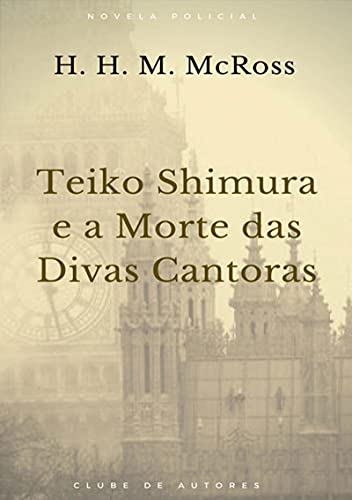
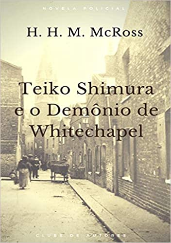
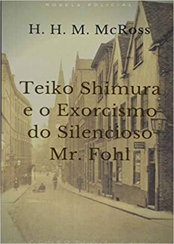

“A respeito daquilo que nada pode ser dito é melhor calar.”
Sentença 7, Tratactus Logico-Philosophicus, Wittgenstein.
H. H. M. McRoss é o pseudônimo de Carlos Teixeira, Doutor em Filosofia e Teoria da Ciência pela PUC-SP, com ênfase na Área da Lógica e Pós-Doutor em Teoria da Ciência pela USP. Seus trabalhos se dedicam ao estudo da Paradoxalidade da Linguagem e a Teoria da Argumentação. Escreveu livros e artigos no campo da Lógica Modal e seu trabalho principal estuda a teoria Semântica da Verdade nas Linguagens Formais do polonês Alfred Tarski. É professor federal de Teoria da Ciência e ministrou curso de Lógica Jurídica para a Procuradoria Geral do Estado de São Paulo e Lógica Criminal para o Departamento de Polícia de Homicídios do Estado de São Paulo.
Livros
- Uma janela para a filosofia 1 | 25/05/2016
-
A filosofia apresentada em uma linguagem muito didática, jovial e cativante, sem perder a compreensão exata dos termos e ideias com que o pensamento filosófico trabalha. Este livro é uma introdução ao pensamento filosófico, um primeiro degrau para todo aquele que deseja saber que coisa é essa, a filosofia, para poder, então, ser definitivamente pego pelo laço do saber e partir para obras maiores.
Livro disponível em: Uma janela para a filosofia 2 - Uma janela para filosofia 2 | 14/09/2016
-
Neste 'Uma Janela para a Filosofia 2' continuamos a narração da História da Filosofia, agora com a emblemática figura de Sócrates. A filosofia socrática reacendeu a discussão da sabedoria em uma época em que parecia ser sábio aquele que fosse esperto o bastante para enriquecer. Sócrates, nesse ambiente, aponta que a verdadeira sabedoria é a busca da virtude pelo autodomínio e que isso não poderia ser aprendido por aulas pagas a sofistas. Com isso resgatou a vocação da verdadeira filosofia: permitir a opção pela liberdade em um mundo onde os vícios aprisionavam e a política era um ato antes destrutivo do que uma vivência saudável entre os homens.
Livro disponível em: Uma janela para filosofia 2 - Teiko Shimura e os Dois Nomes do Dr. Hendly | 28/06/2018
-
Londres, 1895. Um crime hediondo ocorre em Baldomore Castle. Um assassino monstruoso mata com requintes de crueldade o respeitado Lord Velton. Visitando a Scotland Yard para aprender as modernas técnicas ocidentais de combate ao crime nas grandes metrópoles está o Detetive Teiko Shimura da Polícia de Tóquio. Ele é convidado a opinar sobre o crime e sua perspicácia e abertura em cogitar o fantástico e o impossível constrói uma linha de investigação que termina em descobrir que há uma tênue linha entre o maravilhoso e o real. Fundando uma equipe especial, 'Os Quatro Audazes', ele desvenda o segredo terrível que pesa sobre a vida de um renomado médico americano e revela a face horrenda do misterioso e covarde assassino.
Livro disponível em: Teiko Shimura e os Dois Nomes do Dr. Hendly - Teiko Shimura e a Morte das Divas Cantoras | 07/09/2018
-

A segunda aventura do detetive japonês Teiko Shimura, em Londres do final do séc XIX. Novamente sua inteligência em investigação policial será desafiada por um adversário surpreendente, capaz de iludir toda a Scotland Yard. À frente dos Quatro Audazes , e auxiliado pela coragem da Vespa Vermelha , a Vigilante de Londres, Teiko Shimura enfrentará o misterioso terror que cerca a figura do fantasma que mata e lança no Tâmisa o corpo das divas cantoras que se apresentam no magnífico Royal Opera House.
Livro disponível em: Teiko Shimura e a Morte das Divas Cantoras - Teiko Shimura e o Demônio de Whitechapel | 06/09/2018
-

Londres, 1895. O corpo de um renomado biólogo, premiado com a Medalha da Rainha da Real Sociedade Britânica, é descoberto estripado, desmembrado e enfiado dentro da chaminé de uma casa ordinária de uma viela pobre de Whitechapel. Chamado para contribuir com sua inteligência para solucionar o crime, o detetive Teiko Shimura, em visita a Scotland Yard, se vê diante de um misterioso ser fantástico cuja ação demoníaca deixa marcas que esclarecem crimes do passado e denunciam como a ciência pode ser cúmplice do mal mais absurdo. Auxiliado pela 'Vespa', a Vigilante de Londres, a única capaz de enfrentar o Demônio de Whitechapel, e compondo com ela o grupo dos 'Quatro Audazes', Teiko Shimura se vê diante do desafio mais perigoso que o grupo de heróis já enfrentou até então.
Livro disponível em: Teiko Shimura e o Demônio de Whitechapel - Teiko Shimura e as Bruxas de Battersea | 14/12/2018
-
Londres, 1895. O aparecimento de corpos envolvidos em rituais macabros e o roubo misterioso em museus de objetos ligados à magia obrigam a Scotland Yard a recorrer às habilidades mentais do detetive japonês Teiko Shimura, em visita oficial a Londres. Nesta quarta aventura do genial detetive japonês na Londres Vitoriana, eventos misteriosos rompem com a lógica científica da investigação criminal comum e colocam os 'Quatro Audazes' e a superheroína Vespa Vermelha em guerra direta contra o sobrenatural, enfrentando o poder maléfico da feitiçaria e caminhando sobre o fio tênue que separa o real da experiência mais fantástica.
Livro disponível em: Teiko Shimura e as Bruxas de Battersea - Teiko Shimura e a Maldição da Família Thorne | 30/04/2019
-
Londres, 1895. Na noite vitoriana da capital do mundo, o patriarca da poderosa Família Thorne é raptado e aparece decapitado, com uma lanterna folclórica de halloween no lugar da cabeça. Imediatamente a superstição faz lembrar a maldição que cerca a família, que diz que a cada cinco gerações, cinco Thorne serão decapitados por um fantasma sem cabeça. Convocados para entender as circunstãncias do crime fantástico, Teiko Shimura e Wasaru Watanabe, detetives visitantes da Polícia de Tóquio, se deparam com pistas, códigos e sinais misteriosos que os levam a suspeitar que mais que uma lenda, o que corre é um plano sórdido de vingança. 'Os Quatro Audazes' - Shimura, Wasaru, Miss Caledwin e Lady Neverness - colocarão sua mente e inteligência fabulosas para resolver o mistério da Maldição da Família Thorne, enquanto a Vespa Vermelha luta para sobreviver a um exército que a irá caçá-la como o 'Inimigo Público N° 1 de Londres'.
Livro disponível em: Teiko Shimura e a Maldição da Família Thorne - Teiko Shimura e o Exorcismo do Silencioso Mr. Fohl | 02/05/2019
-

Londres, 1895. No Asilo Grover hall para lunáticos, um paciente mudo Mr. Fohl, sofre de repetidas possessões demoníacas nas quais pela sua boca uma voz tenebrosa anuncia, uma a um, a morte do ricos empresários e chefes de máfia que no passado firmaram a comissão para a Segurança Pública que pretendeu matar a Vespa Vermelha. Teiko Shimura, a convite da Scotland Yard, se vê diante de indícios que dão a triste evidência de que é realmente sua aprendiz, Lady Neverness, sob o manto da Vespa Vermelha, a assassina fria desses mafiosos. Insistindo em uma saída que não condene a Vespa Vermelha e destrua os 'Quatro Audazes', Shimura forçara até o limite sua inteligência e crença para desvendar o mistério que envolve o terror, a maldição, o medo e a perdição das ameaças demoníacas pronunciadas pela boca do possesso Mr. Fohl.
Livro disponível em: Teiko Shimura e o Exorcismo do Silencioso Mr. Fohl - Teiko Shimura e a Gárgula de Westminster | 28/10/2019
-
Londres, 1895. Em plena semana em que ocorre a Feira Mundial de Tecnologia, a figura sobrenatural de uma Gárgula voadora imprime terror, sequestra e mata engenheiros de vários nacionalidades, derrubando à noite seus corpos sobre os telhados da Abadia de Westminster. Descobrindo a ligação dos mortos com grupos terroristas anarquistas, a Scotland Yard teme que um atentado político contra os Chefes de Estado na Feira e contra a própria Rainha Vitória. A mente lógica de Teiko Shimura, no entanto, liga indícios de modo inusitado e aponta que decerto a ameaça é bem maior, vem do céu e se trata de um poder malévolo que espera cair mortalmente sobre Londres a partir das nuvens. Com a ajuda valorosa da Vespa Vermelha, a Vigilante de Londres, que com Shimura, Wasaru e Miss Caledwin, constitui o grupo dos 'Quatro Audazes', o mistério se revela um perigo mundial que só pode ser enfrentado pelo Maior Herói da Terra.
Livro disponível em: Teiko Shimura E A Gárgula De Westminster - Teiko Shimura e a Invocação de Vöohrocke, O Demônio | 28/10/2019
-
Londres, 1895. Um maníaco assassina crianças em um ritual satânico de invocação do terrível demônio Vöohrocke, A Scotland Yard reconhece estar diante de um caso sobrenatural e recorre às habilidades de dedução do detetive japonês Teiko Shimura e à força de sua equipe, 'Os Quatro Audazes', na esperança de parar os crimes horríveis. Na tentativa de capturar o Bruxo, a manifestação do Demônio Vöohrocke afeta a dimensão do tempo e os heróis da Era Vitoriana - Shimura, Wasaru, Miss Caledwin e a Vespa Vermelha - são arrastados para a Londres do século XXI, onde viverão a maior aventura de suas vidas.
Livro disponível em: Teiko Shimura e a Invocação de Vöohrocke, O Demônio - Teiko Shimura e o Monstro das Catacumbas de Clerkenwell | 30/08/2020
-
Londres, 1895. Cadáveres de renomados acadêmicos cientistas da Universidade de Londres são achados ressequidos, com misteriosas marcas no pescoço, como se todo o líquido do corpo tivesse sido sugado por uma entidade assassina. Ao mesmo tempo, as imagens de pedra dos Sete Pecados Capitais na fachada da Igreja de St. James em Clerkenwell aparecem derretidas por poder misterioso. No centro desse enigma está a mente fabulosa do detetive Teiko Shimura, que desvenda a conexão dos crimes com os fatos envolvendo uma mal sucedida expedição científica às florestas africanas do Congo, onde desapareceu o genial Prof. Janus Rukh. A Scotland Yard é supreendida quando se revela a natureza tenebrosa do assassino que, para realizar seu projeto sórdido, se ocultou nas profundezas das Catacumbas de Clerkenwell. Com a ajuda de Lady Neverness, a Vespa Vermelha Vigilante de Londres, Teiko Shimura, Miss Caledwin e Wasaru Watanabe enfrentam e derrotam o mais aterrorizante inimigo que suas aventuras poderiam trazer.
Livro disponível em: Teiko Shimura e o Monstro das Catacumbas de Clerkenwell - Shimura e os Horríveis Pesadelos de Miss Elmsdale | 30/08/2020
-
Londres, 1895. O detetive japonês Teiko Shimura se prepara para retornar ao Japão depois de um ano acompanhando a metodologia da Scotland Yard para aplicar em sua jurisdição em Tóquio. Mas ele deseja deixar um último caso resolvido, a misteriosa morte de Edeva Longford, a esposa do legista Dr. Longford, assassinada há sete anos pelo Homem que Ri, o mesmo misterioso assassino dos pais de Lady Neverness. Aparentemente desligado do caso, de modo assustador uma jovem, Miss Helen Elmsdale, é abalada por pesadelos terríveis onde se revelam o nome de mulheres que serão assassinadas. Quando essas vítimas surgem misteriosamente no porão trancado de River Hall não resta aos outros Quatro Audazes - Shimura, Wasaru, Miss Caledwin e a Vespa Vermelha - senão creditar ao sobrenatural mais um crime macabro que veio manchar a noite de Londres. Enquanto o próprio Dr. Sigmund Freud vem em auxilio da Yard para desvendar o mistério dos pesadelos, Shimura enfrenta seu último desafio na Inglaterra Vitoriana.
Livro disponível em: Teiko Shimura e os Horríveis Pesadelos de Miss Elmsdale - O Dia Vermelho | 23/02/2021
-

1935. Luiz Carlos Prestes chega ao Brasil, enviado por Moscou, para com uma equipe de agentes soviéticos realizar a Revolução Comunista. Na noite em que secretamente desembarca em São Paulo, a polícia descobre o cadáver do empresário Mário Brunetti. O Comissário Freitas, designado para a investigação do crime, está vivendo o drama pessoal de ser um marido traído, e não vê utilidade nenhuma em sua ocupação senão usar a máquina da polícia para achar e matar sua esposa adúltera e o amante dela. Enquanto os generais mais próximos de Getúlio Vargas se dedicam a caçar Prestes de todos os modos, para se impedir os eventos terríveis da Intentona Comunista, a investigação do Comissário Freitas o leva a enredar a traição da esposa e a morte de Brunetti com o aparelhamento comunista que preparava a Revolução. Ele descobre Prestes, mas contar isso à polícia política levaria à exposição completa de sua vergonha nas páginas dos jornais de todo país...
Livro disponível em: O Dia Vermelho
Lanterna do Saber, live aos sábados 20h.